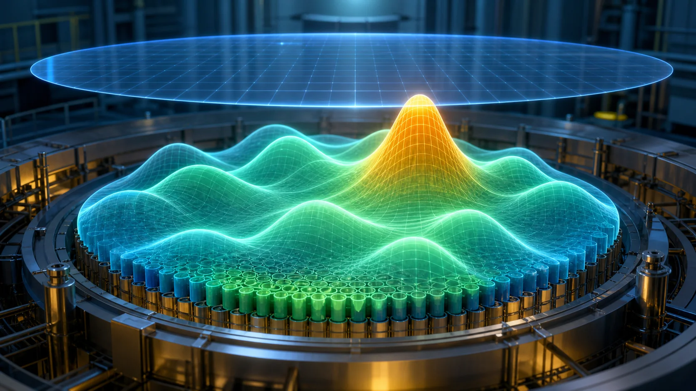
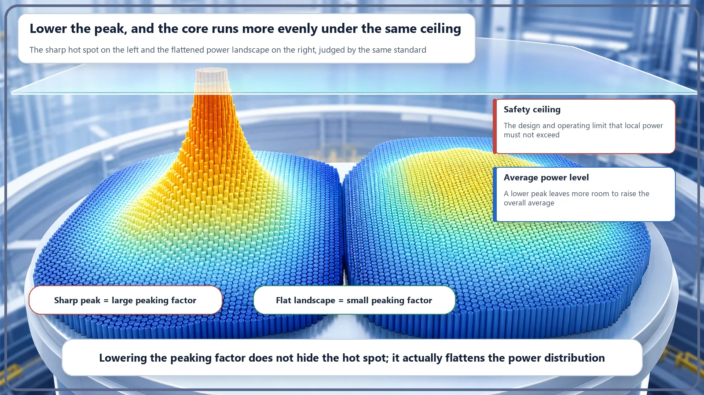

Long-Term Core Behavior & Fuel Cycle · 166
Why One Spoonful Burns Your Mouth — The Power Peaking Factor That Rules the Reactor Core
A reactor core, like your tongue, is judged by its hottest spot, not its average; the peaking factor measures how far that spot stands above the rest.

The power peaking factor is the highest local power in the core divided by the core-average power. It equals 1 only if power is perfectly even and is larger in practice. Because fuel, cladding and cooling limits are reached first at the hottest point, a lower peaking factor lets the whole core run at higher power within the same safety limits.
You ladle out a bowl of soup, blow on it, take a sip, and of course that one spoonful happens to be scalding. The whole pot wasn't that hot. The edges had already cooled to lukewarm, and on average the soup was probably at a perfectly pleasant temperature. But your mouth, unfairly, doesn't judge safety by the average temperature. It judges by one thing: the hottest mouthful.
That little kitchen accident contains the whole of today's story. A reactor core behaves exactly like your tongue. What decides its safety is not how hot the core is on average, but the single hottest point inside it. And the number that captures "how many times stronger is that hottest point than the average?" is today's star: the power peaking factor.
The core has its own scalding spoonful
A reactor core is packed with fuel, and fission releases heat throughout it. But the heat doesn't come out equally everywhere. In some places neutrons are more crowded and the power is high; in others they are relatively sparse and the power is lower. If you drew the core's power as a landscape, it wouldn't be a flat field. It would look more like rolling hills, with peaks and valleys.
Let's unpack one term here: local power. It sounds technical, but it simply means the power coming out of one small spot. It isn't an average smeared over the whole core; it's the value at one pinpointed location. The power peaking factor is the highest of these local powers divided by the core-average power.
In words, it's that simple:
Power peaking factor = highest local power in the core ÷ core-average power
One division, and that's all. The hottest mouthful divided by the average. If every location produced exactly the same power (impossible in reality), the maximum would equal the average and the value would be exactly 1. The more any one spot sticks up, the further above 1 it climbs. So this number is really a gauge of how bumpy the core is. The closer to 1, the flatter and more even; the larger it gets, the sharper some peak is sticking up somewhere.
Why everyone is so eager to push this number down
So what's the problem when the peaking factor is large? This is where it gets real.
The limits that the fuel and its cladding (the thin metal tube that encloses the fuel) can tolerate, and the margin before coolant boils so vigorously at the surface that cooling deteriorates, all share one feature: they are reached first not at the average location but at the harshest one. Just like the roof of your mouth. However pleasant the pot is on average, one boiling spoonful is enough to burn you.
That leads to a strange situation. Looking only at the core-average power, there seems to be plenty of room to spare. Yet if the hottest single point is already close to its limit, you can't raise the overall power any further. That one point holds everything back. Turn the logic around and the answer appears. What if you shave down the peaks and make the core more even, bringing the peaking factor closer to 1? The gap between the hottest point and the average shrinks, so the whole core can be pushed higher within the same safety limit. It's like leveling uneven ground: under a low ceiling, a flat floor can be raised much higher than a bumpy one before anything touches.
Want a one-line relationship to get a feel for it? If the safe limiting power at any single location is fixed, then maximum core-average power ≈ that limit ÷ peaking factor. A large peaking factor means a large divisor, which eats into the allowable power; a value close to 1 leaves that much more margin. No wonder designers and operators work hard to keep this number as small as they can.

Neighboring terms that are easy to mix up
A few terms look similar and often get blended together.
First, it's tempting to treat power flattening and the peaking factor as the same thing, but one is an action and the other is a number. Flattening is the design and operating activity that makes the distribution more even; the peaking factor is the report card that measures how even the result is. Good flattening brings the peaking factor closer to 1, but the two words don't mean the same thing.
Second, don't confuse the peaking factor with the total amount of power. It isn't an absolute quantity like so many megawatts; it is purely a ratio. A plant with a high average power can have a small peaking factor if its distribution is even, and a plant with a low average can have a large one if a single spot sticks out. How much power and how evenly it is spread are separate questions.
Finally, this number can also be split by direction. You can ask how even the core is from the center to the edge when viewed from above (the radial direction), and how even a single fuel rod is from bottom to top (the axial direction), and the total peaking factor is treated as roughly the product of the two. The details belong to specialists, but the intuition "the more even top-to-bottom and inside-to-outside, the better" is all you need.
Today's takeaways
- The power peaking factor is the highest local power in the core divided by the core-average power. It's a single division, and its value is always greater than or equal to 1.
- It equals 1 when power is perfectly even and grows as a peak sticks up somewhere, so it is a gauge of how bumpy the core is.
- Safety limits for the fuel, the cladding and cooling are reached first at the single hottest point, not at the average, so a large peaking factor lets that one point hold back the power of the whole core.
- Turned around, the closer the peaking factor gets to 1, the more power the whole core can produce within the same safety limits. That's why people work to lower it.
- "Flattening" (the act of evening things out) and the "peaking factor" (the number measuring how even things are) are different, and the peaking factor is a ratio, not a total amount of power.
In the end, the power peaking factor isn't some secret code that only specialists trade. It is a basic key that compresses into one number why nuclear plants arrange their fuel so carefully and work so hard to even out the power distribution. Once you know that so many efforts to smooth out a core are really attempts to pull this one number closer to 1, the way a reactor runs starts to look a little different.